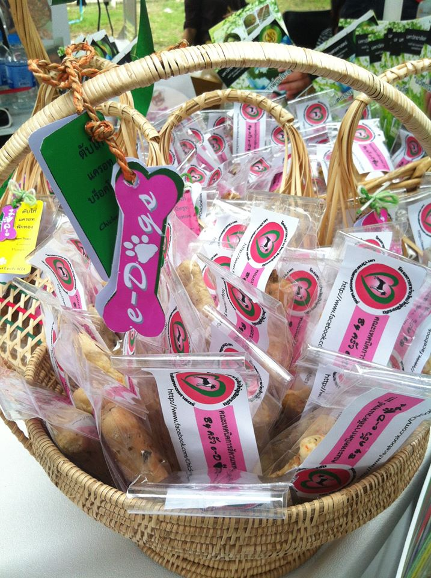
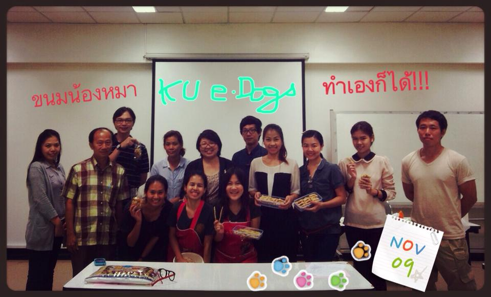
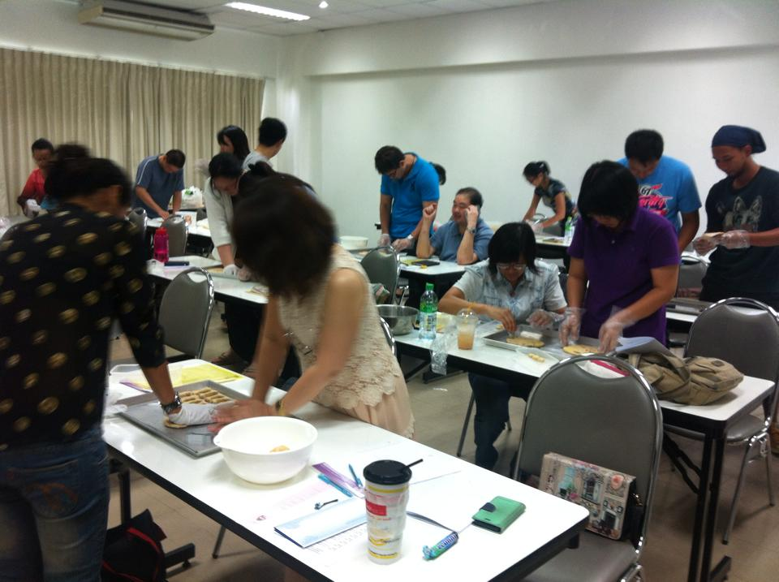
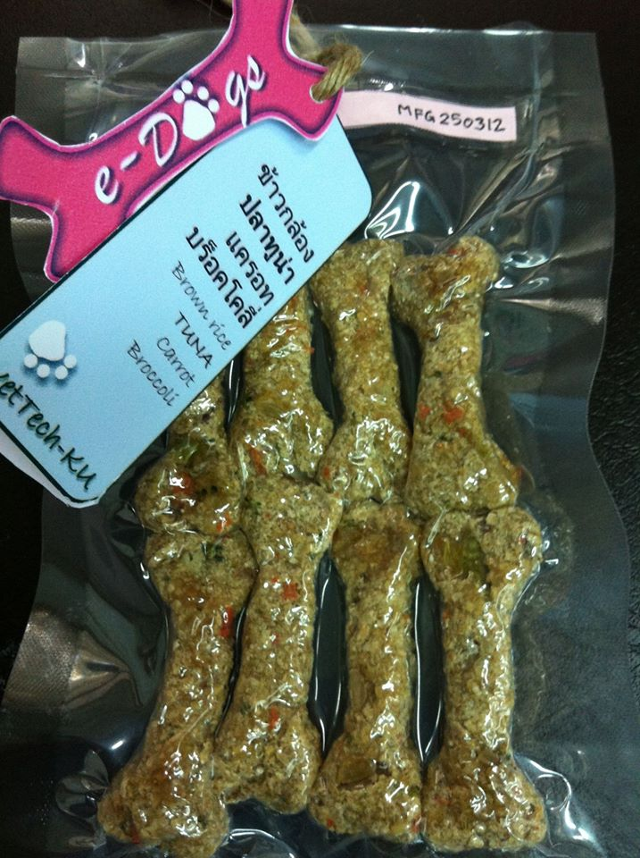
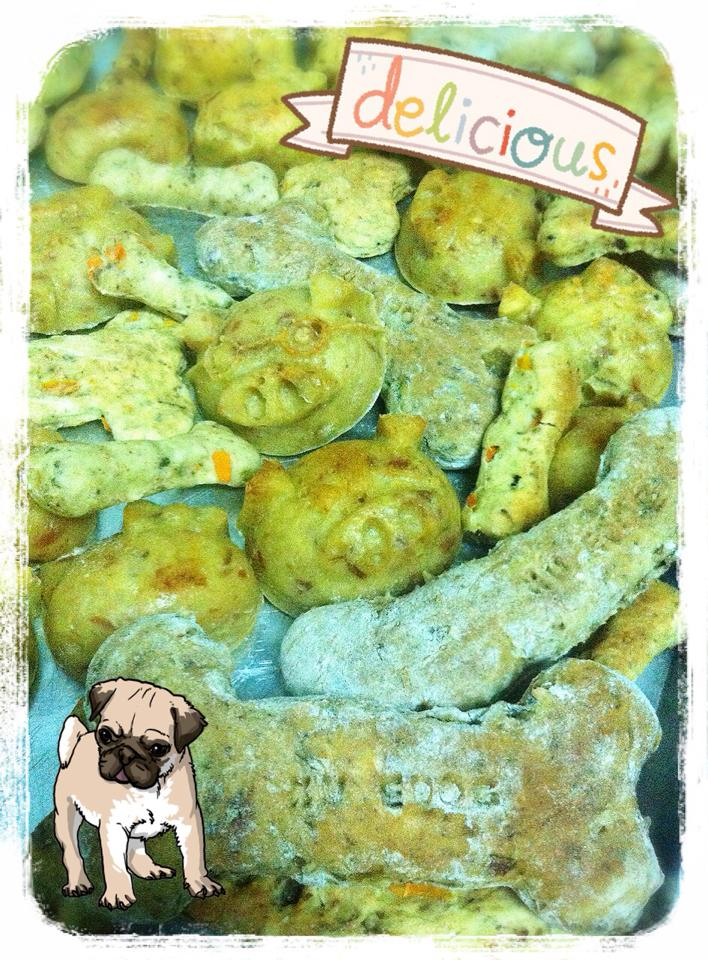
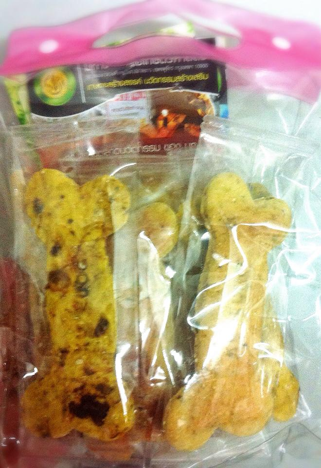
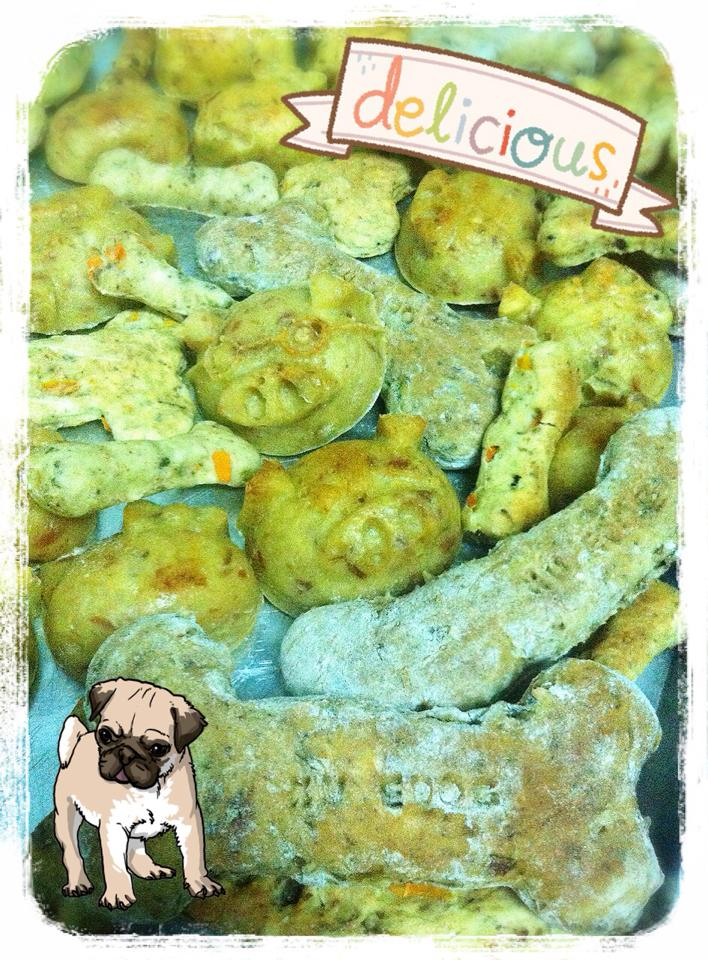
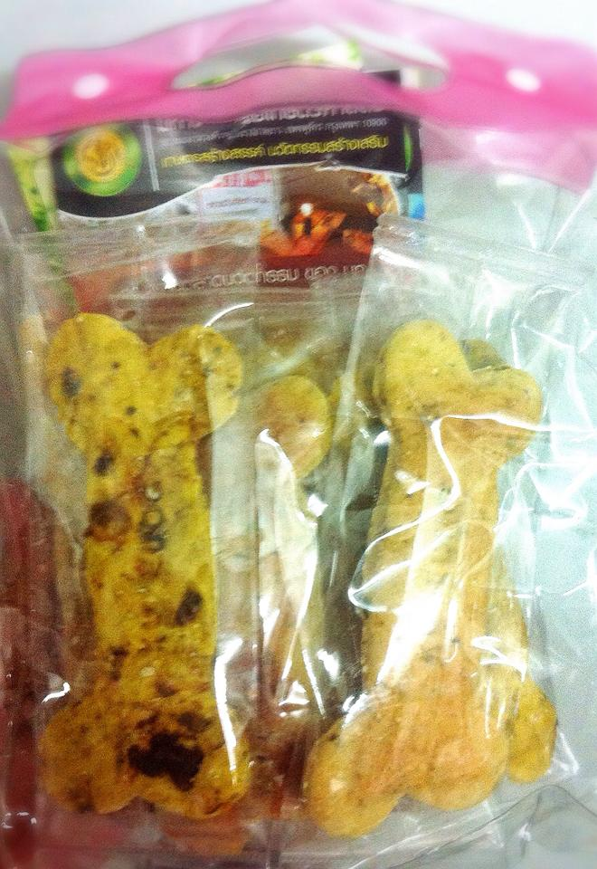

KU e-Dogs!
อาหารสุนัขทางเลือก KU e-Dogs คนเลี้ยงสุนัขหลายคน คงเคยอยากทำอาหารให้สุนัขสุดที่รัก นอกเหนือไปจากการคลุกข้าวผสมของโปรด หรือการให้อาหารเม็ดสำเร็จรูปตามปกติ บางท่านอาจกังวลเรื่องคุณภาพของวัตถุดิบที่นำมาผลิตเป็นอาหารสุนัขที่มีจำหน่ายทั่วไป อยากได้อาหารที่แบ่งกันกินได้ทั้งนายและสุนัข จากแนวความคิดข้างต้น ทำให้เห็นแนวโน้มความต้องการอาหารทางเลือก ที่เน้นคุณภาพของวัตถุดิบ ความสดใหม่ปราศจากสารปรุงแต่งที่อาจมีผลต่อสุขภาพสัตว์ สามารถทำเองได้ที่บ้านด้วยวิธีที่ไม่ซับซ้อน จึงเกิดบูรณาการการเรียนการสอนรายวิชาจุลชีววิทยาทางอาหารและผลิตภัณฑ์จากสัตว์(01600325) ออกมาเป็นนวัตกรรมของคณะเทคนิคการสัตวแพทย์ มหาวิทยาลัยเกษตรศาสตร์ เพื่อยเผยแพร่ให้ผู้เลี้ยงสุนัขและผู้สนใจทั่วไป โดยการจัดอบรมวิชาชีพสำหรับประชาชน เพื่อเป็นการน้อมนำปรัชญาเศรษฐกิจพอเพียงมาใช้ในการดูแลสุขภาพสัตว์
  นวัตกรรมอาหารสุนัขแบบแห้ง KU e-Dogs ที่ทำเองได้ง่ายที่บ้าน จากวัตถุดิบสดใหม่ที่เลือกคัดสรรได้ตามความชอบและงบประมาณของผู้เลี้ยงสุนัข ปราศจากสารเคมีกันเสียเจือปน แห้ง สะอาด เก็บได้นานได้โปรตีนและแร่ธาตุที่จำเป็นจากเนื้อสัตว์แท้ มีกากใยอาหารและวิตามินจากผักสด ได้ประโยชน์และคุณค่าทางอาหารเพิ่มจากเซลล์ยีสต์ ด้วยเทคนิคที่ทำให้เซลล์ยีสต์แตกด้วยกระบวนการอบด้วยเตาอบไมโครเวฟครัวเรือนทั่วไป
รางวัลจากการแข่งขันรายการสมรภูมิไอเดีย อาหารสุนะขทางเลือก ทำเองก็ได้ นิสิตคณะเทคนิคการสัตวแพทย์ประสบความสำเร็จในการขายไอเดีย "อาหารสุนัขทางเลือก ทำเองก็ได้" ไดเ้ทุนต่อยอดไอเดีย 10,000 บาท และ ได้รางวัลไอเดียติดดาว SME สิ่งประดิษฐ์ต่อยอดเชิงธุรกิจ จากรายการสมรภูมิไอเดีย ic7+ ทางไทยทีวีสีช่อง 3 โดย น.ส.ชันฐกานต์ ศิริโชติ น.ส.รัฐมน สุภาวรธณรรม และ นายทัชชกร เห็นสว่าง ภายใต้การดูแลของอาจารย์ที่ปรึกษา ดร.ศิรพรรณ สุคนธสิงห์ และ ดร.ทิพยรัตน์ ชาหอมชื่น โดยจะออกอากาศวันศุกร์ที่ 11 พฤษภาคม 2555 เวลา 15.45 - 16.10 น. และรายการ"อาวุธไอเดีย" ช่วงเดือนกรกฎาคมนี้อีกด้วย
 


